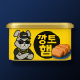

FTD (팔로스루데이) 실패, 오늘의 매매

세 줄로 읽기
추세추종 정찰병으로 투입했던 종목들을 살펴보자 오킨스전자 -1R (-8%)에 자동 손절 걸어 놨는데 장중에 매도 나갔다.
오늘 유튜브 촬영 날이라 장중에 스튜디오 갔다
왔는데 집에 오니 밤 10시다
원문 문장에서 고른 요약입니다. 숫자와 사실은 원문에서 다시 확인하세요.
핵심 포인트
- 1ㅡ_ㅡ; 후덜덜 시장까지 하락하니까 기운이 쑤욱~~ 빠진다
- 2OTL 지난번에 FTD에서 대해서 포스팅을 했다.
- 3오늘 시장이 추가적으로 하락하면서 FTD가 깨졌다.
- 4오늘 FTD 바닥을 깨서 모든 판단을 되돌린다.
이 블로거의 최근 글
같은 분류의 다른 글
- [스테이블코인 어디로] '15% 룰' 완화 땐 컨소시엄 '맏형' 경쟁 가열
- [만나봤더니] 전승휘 큐브엔터 부사장 "2027년 전환기…3~5년 내 업계 선도 기업과 어깨 나란히"
- 염블리 시장함께읽기 - 국내 증시 회복, 코스닥 전고점 탈환
- "오죽하면 위장이혼?" 부부라서 3,357만원 깎이는 기초연금 금액
- 26.11.4주 러닝과 생각 기록 - 인생은 자기조절의 연속이다.
공개 페이지에는 짧은 소개와 원문 링크만 있습니다. 원문 전문은 올리지 않습니다.